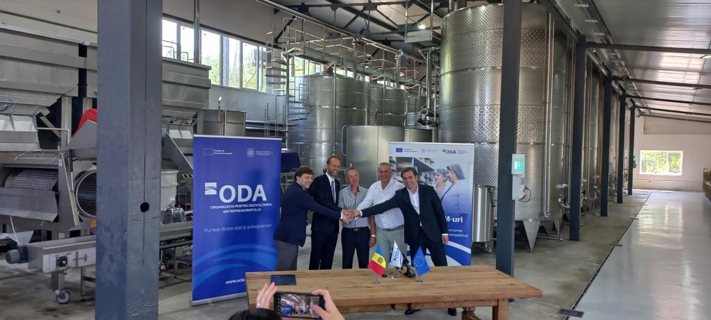

Despre noi

În timpurile agitate când invadatorii își disputau cu ferocitate teritoriile, un baci găsea adăpost pe meleagurile sălbatice din apropierea Ișnovățului. Acolo, o comunitate se dezvoltase în jurul său, iar cătunul cunoscut sub numele de Băcioi a cunoscut o perioadă de înflorire sub îndrumarea sa. Locuitorii trăiau o viață simplă, iar cei doi fii ai baciului își continuau dăruirea pentru locul lor natal. Însă liniștea a fost întreruptă de amenințarea invadatorilor, iar durerea și suferința s-au abătut asupra comunității. În mijlocul acestei furtuni, Kabi, viteazul cal, s-a ridicat ca un simbol al rezistenței și al speranței. În cele din urmă, dreptatea a triumfat, iar domnia asupra acestor pământuri a fost stabilizată sub conducerea lui Ștefan cel Mare. Astfel, așezarea a primit numele de Băcioi, în onoarea baciului și a urmașilor săi. Legătura profundă între comunitate și istoria sa a fost consolidată prin simbolul KABIVIN, care păstrează amintirea vitejiei lui Kabi și a arcașului său, simbolizând unitatea și puterea locului.